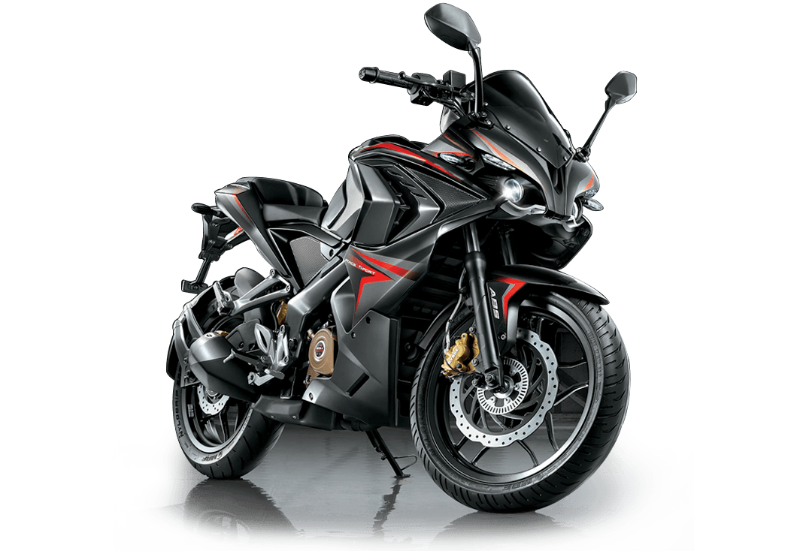

The Bajaj Pulsar RS200 is a stylish and aggressive sports bike designed for riders who want both performance and eye-catching looks. It comes with a 199.5cc liquid-cooled engine that produces around 24.5 PS of power, making it capable of reaching speeds close to 140 km/h. The bike features a sharp aerodynamic design with twin projector headlamps, giving it a bold and modern appearance. It is equipped with disc brakes and dual-channel ABS for better control and safety, along with a comfortable riding position suitable for both city rides and highway trips. In India, the ex-showroom price of the Pulsar RS200 is approximately between ₹1.75 lakh and ₹1.85 lakh, while the on-road price can go up to around ₹2.0 lakh to ₹2.2 lakh depending on the location. Overall, it is a great choice for those looking for a powerful yet affordable sports bike with a strong road presence.